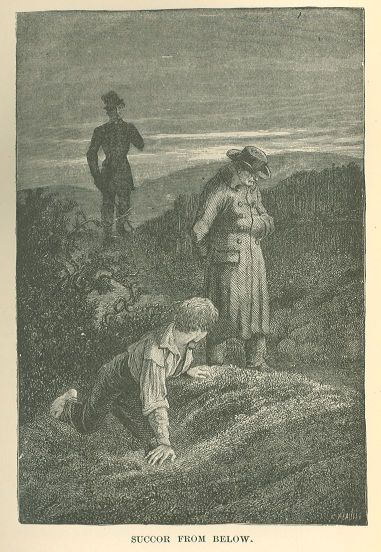

Les Misérables
CHAPTER VIII—THE CHAIN-GANG
Jean Valjean was the more unhappy of the two. Youth, even in its sorrows, always possesses
its own peculiar radiance.
At times, Jean Valjean suffered so greatly that he became puerile. It is the property
of grief to cause the childish side of man to reappear. He had an unconquerable conviction
that Cosette was escaping from him. He would have liked to resist, to retain her,
to arouse her enthusiasm by some external and brilliant matter. These ideas, puerile,
as we have just said, and at the same time senile, conveyed to him, by their very
childishness, a tolerably just notion of the influence of gold lace on the imaginations
of young girls. He once chanced to see a general on horseback, in full uniform, pass
along the street, Comte Coutard, the commandant of Paris. He envied that gilded man;
what happiness it would be, he said to himself, if he could put on that suit which
was an incontestable thing; and if Cosette could behold him thus, she would be dazzled,
and when he had Cosette on his arm and passed the gates of the Tuileries, the guard
would present arms to him, and that would suffice for Cosette, and would dispel her
idea of looking at young men.
An unforeseen shock was added to these sad reflections.
In the isolated life which they led, and since they had come to dwell in the Rue Plumet,
they had contracted one habit. They sometimes took a pleasure trip to see the sun
rise, a mild species of enjoyment which befits those who are entering life and those
who are quitting it.
For those who love solitude, a walk in the early morning is equivalent to a stroll
by night, with the cheerfulness of nature added. The streets are deserted and the
birds are singing. Cosette, a bird herself, liked to rise early. These matutinal excursions
were planned on the preceding evening. He proposed, and she agreed. It was arranged
like a plot, they set out before daybreak, and these trips were so many small delights
for Cosette. These innocent eccentricities please young people.
Jean Valjean's inclination led him, as we have seen, to the least frequented spots,
to solitary nooks, to forgotten places. There then existed, in the vicinity of the
barriers of Paris, a sort of poor meadows, which were almost confounded with the city,
where grew in summer sickly grain, and which, in autumn, after the harvest had been
gathered, presented the appearance, not of having been reaped, but peeled. Jean Valjean
loved to haunt these fields. Cosette was not bored there. It meant solitude to him
and liberty to her. There, she became a little girl once more, she could run and almost
play; she took off her hat, laid it on Jean Valjean's knees, and gathered bunches
of flowers. She gazed at the butterflies on the flowers, but did not catch them; gentleness
and tenderness are born with love, and the young girl who cherishes within her breast
a trembling and fragile ideal has mercy on the wing of a butterfly. She wove garlands
of poppies, which she placed on her head, and which, crossed and penetrated with sunlight,
glowing until they flamed, formed for her rosy face a crown of burning embers.
Even after their life had grown sad, they kept up their custom of early strolls.
One morning in October, therefore, tempted by the serene perfection of the autumn
of 1831, they set out, and found themselves at break of day near the Barriere du Maine.
It was not dawn, it was daybreak; a delightful and stern moment. A few constellations
here and there in the deep, pale azure, the earth all black, the heavens all white,
a quiver amid the blades of grass, everywhere the mysterious chill of twilight. A
lark, which seemed mingled with the stars, was carolling at a prodigious height, and
one would have declared that that hymn of pettiness calmed immensity. In the East,
the Valde-Grace projected its dark mass on the clear horizon with the sharpness of
steel; Venus dazzlingly brilliant was rising behind that dome and had the air of a
soul making its escape from a gloomy edifice.
All was peace and silence; there was no one on the road; a few stray laborers, of
whom they caught barely a glimpse, were on their way to their work along the side-paths.
Jean Valjean was sitting in a cross-walk on some planks deposited at the gate of a
timber-yard. His face was turned towards the highway, his back towards the light;
he had forgotten the sun which was on the point of rising; he had sunk into one of
those profound absorptions in which the mind becomes concentrated, which imprison
even the eye, and which are equivalent to four walls. There are meditations which
may be called vertical; when one is at the bottom of them, time is required to return
to earth. Jean Valjean had plunged into one of these reveries. He was thinking of
Cosette, of the happiness that was possible if nothing came between him and her, of
the light with which she filled his life, a light which was but the emanation of her
soul. He was almost happy in his revery. Cosette, who was standing beside him, was
gazing at the clouds as they turned rosy.
All at once Cosette exclaimed: "Father, I should think some one was coming yonder."
Jean Valjean raised his eyes.
Cosette was right. The causeway which leads to the ancient Barriere du Maine is a
prolongation, as the reader knows, of the Rue de Sevres, and is cut at right angles
by the inner boulevard. At the elbow of the causeway and the boulevard, at the spot
where it branches, they heard a noise which it was difficult to account for at that
hour, and a sort of confused pile made its appearance. Some shapeless thing which
was coming from the boulevard was turning into the road.
It grew larger, it seemed to move in an orderly manner, though it was bristling and
quivering; it seemed to be a vehicle, but its load could not be distinctly made out.
There were horses, wheels, shouts; whips were cracking. By degrees the outlines became
fixed, although bathed in shadows. It was a vehicle, in fact, which had just turned
from the boulevard into the highway, and which was directing its course towards the
barrier near which sat Jean Valjean; a second, of the same aspect, followed, then
a third, then a fourth; seven chariots made their appearance in succession, the heads
of the horses touching the rear of the wagon in front. Figures were moving on these
vehicles, flashes were visible through the dusk as though there were naked swords
there, a clanking became audible which resembled the rattling of chains, and as this
something advanced, the sound of voices waxed louder, and it turned into a terrible
thing such as emerges from the cave of dreams.
As it drew nearer, it assumed a form, and was outlined behind the trees with the pallid
hue of an apparition; the mass grew white; the day, which was slowly dawning, cast
a wan light on this swarming heap which was at once both sepulchral and living, the
heads of the figures turned into the faces of corpses, and this is what it proved
to be:—
Seven wagons were driving in a file along the road. The first six were singularly
constructed. They resembled coopers' drays; they consisted of long ladders placed
on two wheels and forming barrows at their rear extremities. Each dray, or rather
let us say, each ladder, was attached to four horses harnessed tandem. On these ladders
strange clusters of men were being drawn. In the faint light, these men were to be
divined rather than seen. Twenty-four on each vehicle, twelve on a side, back to back,
facing the passers-by, their legs dangling in the air,—this was the manner in which
these men were travelling, and behind their backs they had something which clanked,
and which was a chain, and on their necks something which shone, and which was an
iron collar. Each man had his collar, but the chain was for all; so that if these
four and twenty men had occasion to alight from the dray and walk, they were seized
with a sort of inexorable unity, and were obliged to wind over the ground with the
chain for a backbone, somewhat after the fashion of millepeds. In the back and front
of each vehicle, two men armed with muskets stood erect, each holding one end of the
chain under his foot. The iron necklets were square. The seventh vehicle, a huge rack-sided
baggage wagon, without a hood, had four wheels and six horses, and carried a sonorous
pile of iron boilers, cast-iron pots, braziers, and chains, among which were mingled
several men who were pinioned and stretched at full length, and who seemed to be ill.
This wagon, all lattice-work, was garnished with dilapidated hurdles which appeared
to have served for former punishments. These vehicles kept to the middle of the road.
On each side marched a double hedge of guards of infamous aspect, wearing three-cornered
hats, like the soldiers under the Directory, shabby, covered with spots and holes,
muffled in uniforms of veterans and the trousers of undertakers' men, half gray, half
blue, which were almost hanging in rags, with red epaulets, yellow shoulder belts,
short sabres, muskets, and cudgels; they were a species of soldier-blackguards. These
myrmidons seemed composed of the abjectness of the beggar and the authority of the
executioner. The one who appeared to be their chief held a postilion's whip in his
hand. All these details, blurred by the dimness of dawn, became more and more clearly
outlined as the light increased. At the head and in the rear of the convoy rode mounted
gendarmes, serious and with sword in fist.
This procession was so long that when the first vehicle reached the barrier, the last
was barely debauching from the boulevard. A throng, sprung, it is impossible to say
whence, and formed in a twinkling, as is frequently the case in Paris, pressed forward
from both sides of the road and looked on. In the neighboring lanes the shouts of
people calling to each other and the wooden shoes of market-gardeners hastening up
to gaze were audible.
The men massed upon the drays allowed themselves to be jolted along in silence. They
were livid with the chill of morning. They all wore linen trousers, and their bare
feet were thrust into wooden shoes. The rest of their costume was a fantasy of wretchedness.
Their accoutrements were horribly incongruous; nothing is more funereal than the harlequin
in rags. Battered felt hats, tarpaulin caps, hideous woollen nightcaps, and, side
by side with a short blouse, a black coat broken at the elbow; many wore women's headgear,
others had baskets on their heads; hairy breasts were visible, and through the rent
in their garments tattooed designs could be descried; temples of Love, flaming hearts,
Cupids; eruptions and unhealthy red blotches could also be seen. Two or three had
a straw rope attached to the cross-bar of the dray, and suspended under them like
a stirrup, which supported their feet. One of them held in his hand and raised to
his mouth something which had the appearance of a black stone and which he seemed
to be gnawing; it was bread which he was eating. There were no eyes there which were
not either dry, dulled, or flaming with an evil light. The escort troop cursed, the
men in chains did not utter a syllable; from time to time the sound of a blow became
audible as the cudgels descended on shoulder-blades or skulls; some of these men were
yawning; their rags were terrible; their feet hung down, their shoulders oscillated,
their heads clashed together, their fetters clanked, their eyes glared ferociously,
their fists clenched or fell open inertly like the hands of corpses; in the rear of
the convoy ran a band of children screaming with laughter.
This file of vehicles, whatever its nature was, was mournful. It was evident that
to-morrow, that an hour hence, a pouring rain might descend, that it might be followed
by another and another, and that their dilapidated garments would be drenched, that
once soaked, these men would not get dry again, that once chilled, they would not
again get warm, that their linen trousers would be glued to their bones by the downpour,
that the water would fill their shoes, that no lashes from the whips would be able
to prevent their jaws from chattering, that the chain would continue to bind them
by the neck, that their legs would continue to dangle, and it was impossible not to
shudder at the sight of these human beings thus bound and passive beneath the cold
clouds of autumn, and delivered over to the rain, to the blast, to all the furies
of the air, like trees and stones.
Blows from the cudgel were not omitted even in the case of the sick men, who lay there
knotted with ropes and motionless on the seventh wagon, and who appeared to have been
tossed there like sacks filled with misery.
Suddenly, the sun made its appearance; the immense light of the Orient burst forth,
and one would have said that it had set fire to all those ferocious heads. Their tongues
were unloosed; a conflagration of grins, oaths, and songs exploded. The broad horizontal
sheet of light severed the file in two parts, illuminating heads and bodies, leaving
feet and wheels in the obscurity. Thoughts made their appearance on these faces; it
was a terrible moment; visible demons with their masks removed, fierce souls laid
bare. Though lighted up, this wild throng remained in gloom. Some, who were gay, had
in their mouths quills through which they blew vermin over the crowd, picking out
the women; the dawn accentuated these lamentable profiles with the blackness of its
shadows; there was not one of these creatures who was not deformed by reason of wretchedness;
and the whole was so monstrous that one would have said that the sun's brilliancy
had been changed into the glare of the lightning. The wagon-load which headed the
line had struck up a song, and were shouting at the top of their voices with a haggard
joviality, a potpourri by Desaugiers, then famous, called The Vestal; the trees shivered
mournfully; in the cross-lanes, countenances of bourgeois listened in an idiotic delight
to these coarse strains droned by spectres.
All sorts of distress met in this procession as in chaos; here were to be found the
facial angles of every sort of beast, old men, youths, bald heads, gray beards, cynical
monstrosities, sour resignation, savage grins, senseless attitudes, snouts surmounted
by caps, heads like those of young girls with corkscrew curls on the temples, infantile
visages, and by reason of that, horrible thin skeleton faces, to which death alone
was lacking. On the first cart was a negro, who had been a slave, in all probability,
and who could make a comparison of his chains. The frightful leveller from below,
shame, had passed over these brows; at that degree of abasement, the last transformations
were suffered by all in their extremest depths, and ignorance, converted into dulness,
was the equal of intelligence converted into despair. There was no choice possible
between these men who appeared to the eye as the flower of the mud. It was evident
that the person who had had the ordering of that unclean procession had not classified
them. These beings had been fettered and coupled pell-mell, in alphabetical disorder,
probably, and loaded hap-hazard on those carts. Nevertheless, horrors, when grouped
together, always end by evolving a result; all additions of wretched men give a sum
total, each chain exhaled a common soul, and each dray-load had its own physiognomy.
By the side of the one where they were singing, there was one where they were howling;
a third where they were begging; one could be seen in which they were gnashing their
teeth; another load menaced the spectators, another blasphemed God; the last was as
silent as the tomb. Dante would have thought that he beheld his seven circles of hell
on the march. The march of the damned to their tortures, performed in sinister wise,
not on the formidable and flaming chariot of the Apocalypse, but, what was more mournful
than that, on the gibbet cart.
One of the guards, who had a hook on the end of his cudgel, made a pretence from time
to time, of stirring up this mass of human filth. An old woman in the crowd pointed
them out to her little boy five years old, and said to him: "Rascal, let that be a
warning to you!"
As the songs and blasphemies increased, the man who appeared to be the captain of
the escort cracked his whip, and at that signal a fearful dull and blind flogging,
which produced the sound of hail, fell upon the seven dray-loads; many roared and
foamed at the mouth; which redoubled the delight of the street urchins who had hastened
up, a swarm of flies on these wounds.
Jean Valjean's eyes had assumed a frightful expression. They were no longer eyes;
they were those deep and glassy objects which replace the glance in the case of certain
wretched men, which seem unconscious of reality, and in which flames the reflection
of terrors and of catastrophes. He was not looking at a spectacle, he was seeing a
vision. He tried to rise, to flee, to make his escape; he could not move his feet.
Sometimes, the things that you see seize upon you and hold you fast. He remained nailed
to the spot, petrified, stupid, asking himself, athwart confused and inexpressible
anguish, what this sepulchral persecution signified, and whence had come that pandemonium
which was pursuing him. All at once, he raised his hand to his brow, a gesture habitual
to those whose memory suddenly returns; he remembered that this was, in fact, the
usual itinerary, that it was customary to make this detour in order to avoid all possibility
of encountering royalty on the road to Fontainebleau, and that, five and thirty years
before, he had himself passed through that barrier.
Cosette was no less terrified, but in a different way. She did not understand; what
she beheld did not seem to her to be possible; at length she cried:—
"Father! What are those men in those carts?"
Jean Valjean replied: "Convicts."
"Whither are they going?"
"To the galleys."
At that moment, the cudgelling, multiplied by a hundred hands, became zealous, blows
with the flat of the sword were mingled with it, it was a perfect storm of whips and
clubs; the convicts bent before it, a hideous obedience was evoked by the torture,
and all held their peace, darting glances like chained wolves.
Cosette trembled in every limb; she resumed:—
"Father, are they still men?"
"Sometimes," answered the unhappy man.
It was the chain-gang, in fact, which had set out before daybreak from Bicêtre, and
had taken the road to Mans in order to avoid Fontainebleau, where the King then was.
This caused the horrible journey to last three or four days longer; but torture may
surely be prolonged with the object of sparing the royal personage a sight of it.
Jean Valjean returned home utterly overwhelmed. Such encounters are shocks, and the
memory that they leave behind them resembles a thorough shaking up.
Nevertheless, Jean Valjean did not observe that, on his way back to the Rue de Babylone
with Cosette, the latter was plying him with other questions on the subject of what
they had just seen; perhaps he was too much absorbed in his own dejection to notice
her words and reply to them. But when Cosette was leaving him in the evening, to betake
herself to bed, he heard her say in a low voice, and as though talking to herself:
"It seems to me, that if I were to find one of those men in my pathway, oh, my God,
I should die merely from the sight of him close at hand."
Fortunately, chance ordained that on the morrow of that tragic day, there was some
official solemnity apropos of I know not what,—fetes in Paris, a review in the Champ
de Mars, jousts on the Seine, theatrical performances in the Champs-Elysees, fireworks
at the Arc de l'Etoile, illuminations everywhere. Jean Valjean did violence to his
habits, and took Cosette to see these rejoicings, for the purpose of diverting her
from the memory of the day before, and of effacing, beneath the smiling tumult of
all Paris, the abominable thing which had passed before her. The review with which
the festival was spiced made the presence of uniforms perfectly natural; Jean Valjean
donned his uniform of a national guard with the vague inward feeling of a man who
is betaking himself to shelter. However, this trip seemed to attain its object. Cosette,
who made it her law to please her father, and to whom, moreover, all spectacles were
a novelty, accepted this diversion with the light and easy good grace of youth, and
did not pout too disdainfully at that flutter of enjoyment called a public fete; so
that Jean Valjean was able to believe that he had succeeded, and that no trace of
that hideous vision remained.
Some days later, one morning, when the sun was shining brightly, and they were both
on the steps leading to the garden, another infraction of the rules which Jean Valjean
seemed to have imposed upon himself, and to the custom of remaining in her chamber
which melancholy had caused Cosette to adopt, Cosette, in a wrapper, was standing
erect in that negligent attire of early morning which envelops young girls in an adorable
way and which produces the effect of a cloud drawn over a star; and, with her head
bathed in light, rosy after a good sleep, submitting to the gentle glances of the
tender old man, she was picking a daisy to pieces. Cosette did not know the delightful
legend, I love a little, passionately, etc.—who was there who could have taught her?
She was handling the flower instinctively, innocently, without a suspicion that to
pluck a daisy apart is to do the same by a heart. If there were a fourth, and smiling
Grace called Melancholy, she would have worn the air of that Grace. Jean Valjean was
fascinated by the contemplation of those tiny fingers on that flower, and forgetful
of everything in the radiance emitted by that child. A red-breast was warbling in
the thicket, on one side. White cloudlets floated across the sky, so gayly, that one
would have said that they had just been set at liberty. Cosette went on attentively
tearing the leaves from her flower; she seemed to be thinking about something; but
whatever it was, it must be something charming; all at once she turned her head over
her shoulder with the delicate languor of a swan, and said to Jean Valjean: "Father,
what are the galleys like?"
BOOK FOURTH.—SUCCOR FROM BELOW MAY TURN OUT TO BE SUCCOR FROM ON HIGH
CHAPTER I—A WOUND WITHOUT, HEALING WITHIN
Thus their life clouded over by degrees.
But one diversion, which had formerly been a happiness, remained to them, which was
to carry bread to those who were hungry, and clothing to those who were cold. Cosette
often accompanied Jean Valjean on these visits to the poor, on which they recovered
some remnants of their former free intercourse; and sometimes, when the day had been
a good one, and they had assisted many in distress, and cheered and warmed many little
children, Cosette was rather merry in the evening. It was at this epoch that they
paid their visit to the Jondrette den.
On the day following that visit, Jean Valjean made his appearance in the pavilion
in the morning, calm as was his wont, but with a large wound on his left arm which
was much inflamed, and very angry, which resembled a burn, and which he explained
in some way or other. This wound resulted in his being detained in the house for a
month with fever. He would not call in a doctor. When Cosette urged him, "Call the
dog-doctor," said he.
Cosette dressed the wound morning and evening with so divine an air and such angelic
happiness at being of use to him, that Jean Valjean felt all his former joy returning,
his fears and anxieties dissipating, and he gazed at Cosette, saying: "Oh! what a
kindly wound! Oh! what a good misfortune!"
Cosette on perceiving that her father was ill, had deserted the pavilion and again
taken a fancy to the little lodging and the back courtyard. She passed nearly all
her days beside Jean Valjean and read to him the books which he desired. Generally
they were books of travel. Jean Valjean was undergoing a new birth; his happiness
was reviving in these ineffable rays; the Luxembourg, the prowling young stranger,
Cosette's coldness,—all these clouds upon his soul were growing dim. He had reached
the point where he said to himself: "I imagined all that. I am an old fool."
His happiness was so great that the horrible discovery of the Thenardiers made in
the Jondrette hovel, unexpected as it was, had, after a fashion, glided over him unnoticed.
He had succeeded in making his escape; all trace of him was lost—what more did he
care for! he only thought of those wretched beings to pity them. "Here they are in
prison, and henceforth they will be incapacitated for doing any harm," he thought,
"but what a lamentable family in distress!"
As for the hideous vision of the Barriere du Maine, Cosette had not referred to it
again.
Sister Sainte-Mechtilde had taught Cosette music in the convent; Cosette had the voice
of a linnet with a soul, and sometimes, in the evening, in the wounded man's humble
abode, she warbled melancholy songs which delighted Jean Valjean.
Spring came; the garden was so delightful at that season of the year, that Jean Valjean
said to Cosette:—
"You never go there; I want you to stroll in it."
"As you like, father," said Cosette.
And for the sake of obeying her father, she resumed her walks in the garden, generally
alone, for, as we have mentioned, Jean Valjean, who was probably afraid of being seen
through the fence, hardly ever went there.
Jean Valjean's wound had created a diversion.
When Cosette saw that her father was suffering less, that he was convalescing, and
that he appeared to be happy, she experienced a contentment which she did not even
perceive, so gently and naturally had it come. Then, it was in the month of March,
the days were growing longer, the winter was departing, the winter always bears away
with it a portion of our sadness; then came April, that daybreak of summer, fresh
as dawn always is, gay like every childhood; a little inclined to weep at times like
the new-born being that it is. In that month, nature has charming gleams which pass
from the sky, from the trees, from the meadows and the flowers into the heart of man.
Cosette was still too young to escape the penetrating influence of that April joy
which bore so strong a resemblance to herself. Insensibly, and without her suspecting
the fact, the blackness departed from her spirit. In spring, sad souls grow light,
as light falls into cellars at midday. Cosette was no longer sad. However, though
this was so, she did not account for it to herself. In the morning, about ten o'clock,
after breakfast, when she had succeeded in enticing her father into the garden for
a quarter of an hour, and when she was pacing up and down in the sunlight in front
of the steps, supporting his left arm for him, she did not perceive that she laughed
every moment and that she was happy.
Jean Valjean, intoxicated, beheld her growing fresh and rosy once more.
"Oh! What a good wound!" he repeated in a whisper.
And he felt grateful to the Thenardiers.
His wound once healed, he resumed his solitary twilight strolls.
It is a mistake to suppose that a person can stroll alone in that fashion in the uninhabited
regions of Paris without meeting with some adventure.
CHAPTER II—MOTHER PLUTARQUE FINDS NO DIFFICULTY IN EXPLAINING A PHENOMENON
One evening, little Gavroche had had nothing to eat; he remembered that he had not
dined on the preceding day either; this was becoming tiresome. He resolved to make
an effort to secure some supper. He strolled out beyond the Salpetriere into deserted
regions; that is where windfalls are to be found; where there is no one, one always
finds something. He reached a settlement which appeared to him to be the village of
Austerlitz.
In one of his preceding lounges he had noticed there an old garden haunted by an old
man and an old woman, and in that garden, a passable apple-tree. Beside the apple-tree
stood a sort of fruit-house, which was not securely fastened, and where one might
contrive to get an apple. One apple is a supper; one apple is life. That which was
Adam's ruin might prove Gavroche's salvation. The garden abutted on a solitary, unpaved
lane, bordered with brushwood while awaiting the arrival of houses; the garden was
separated from it by a hedge.
Gavroche directed his steps towards this garden; he found the lane, he recognized
the apple-tree, he verified the fruit-house, he examined the hedge; a hedge means
merely one stride. The day was declining, there was not even a cat in the lane, the
hour was propitious. Gavroche began the operation of scaling the hedge, then suddenly
paused. Some one was talking in the garden. Gavroche peeped through one of the breaks
in the hedge.

A couple of paces distant, at the foot of the hedge on the other side, exactly at
the point where the gap which he was meditating would have been made, there was a
sort of recumbent stone which formed a bench, and on this bench was seated the old
man of the garden, while the old woman was standing in front of him. The old woman
was grumbling. Gavroche, who was not very discreet, listened.
"Monsieur Mabeuf!" said the old woman.
"Mabeuf!" thought Gavroche, "that name is a perfect farce."
The old man who was thus addressed, did not stir. The old woman repeated:—
"Monsieur Mabeuf!"
The old man, without raising his eyes from the ground, made up his mind to answer:—
"What is it, Mother Plutarque?"
"Mother Plutarque!" thought Gavroche, "another farcical name."
Mother Plutarque began again, and the old man was forced to accept the conversation:—
"The landlord is not pleased."
"Why?"
"We owe three quarters rent."
"In three months, we shall owe him for four quarters."
"He says that he will turn you out to sleep."
"I will go."
"The green-grocer insists on being paid. She will no longer leave her fagots. What
will you warm yourself with this winter? We shall have no wood."
"There is the sun."
"The butcher refuses to give credit; he will not let us have any more meat."
"That is quite right. I do not digest meat well. It is too heavy."
"What shall we have for dinner?"
"Bread."
"The baker demands a settlement, and says, 'no money, no bread.'"
"That is well."
"What will you eat?"
"We have apples in the apple-room."
"But, Monsieur, we can't live like that without money."
"I have none."
The old woman went away, the old man remained alone. He fell into thought. Gavroche
became thoughtful also. It was almost dark.
The first result of Gavroche's meditation was, that instead of scaling the hedge,
he crouched down under it. The branches stood apart a little at the foot of the thicket.
"Come," exclaimed Gavroche mentally, "here's a nook!" and he curled up in it. His
back was almost in contact with Father Mabeuf's bench. He could hear the octogenarian
breathe.
Then, by way of dinner, he tried to sleep.
It was a cat-nap, with one eye open. While he dozed, Gavroche kept on the watch.
The twilight pallor of the sky blanched the earth, and the lane formed a livid line
between two rows of dark bushes.
All at once, in this whitish band, two figures made their appearance. One was in front,
the other some distance in the rear.
"There come two creatures," muttered Gavroche.
The first form seemed to be some elderly bourgeois, who was bent and thoughtful, dressed
more than plainly, and who was walking slowly because of his age, and strolling about
in the open evening air.
The second was straight, firm, slender. It regulated its pace by that of the first;
but in the voluntary slowness of its gait, suppleness and agility were discernible.
This figure had also something fierce and disquieting about it, the whole shape was
that of what was then called an elegant; the hat was of good shape, the coat black,
well cut, probably of fine cloth, and well fitted in at the waist. The head was held
erect with a sort of robust grace, and beneath the hat the pale profile of a young
man could be made out in the dim light. The profile had a rose in its mouth. This
second form was well known to Gavroche; it was Montparnasse.
He could have told nothing about the other, except that he was a respectable old man.
Gavroche immediately began to take observations.
One of these two pedestrians evidently had a project connected with the other. Gavroche
was well placed to watch the course of events. The bedroom had turned into a hiding-place
at a very opportune moment.
Montparnasse on the hunt at such an hour, in such a place, betokened something threatening.
Gavroche felt his gamin's heart moved with compassion for the old man.
What was he to do? Interfere? One weakness coming to the aid of another! It would
be merely a laughing matter for Montparnasse. Gavroche did not shut his eyes to the
fact that the old man, in the first place, and the child in the second, would make
but two mouthfuls for that redoubtable ruffian eighteen years of age.
While Gavroche was deliberating, the attack took place, abruptly and hideously. The
attack of the tiger on the wild ass, the attack of the spider on the fly. Montparnasse
suddenly tossed away his rose, bounded upon the old man, seized him by the collar,
grasped and clung to him, and Gavroche with difficulty restrained a scream. A moment
later one of these men was underneath the other, groaning, struggling, with a knee
of marble upon his breast. Only, it was not just what Gavroche had expected. The one
who lay on the earth was Montparnasse; the one who was on top was the old man. All
this took place a few paces distant from Gavroche.
The old man had received the shock, had returned it, and that in such a terrible fashion,
that in a twinkling, the assailant and the assailed had exchanged roles.
"Here's a hearty veteran!" thought Gavroche.
He could not refrain from clapping his hands. But it was applause wasted. It did not
reach the combatants, absorbed and deafened as they were, each by the other, as their
breath mingled in the struggle.
Silence ensued. Montparnasse ceased his struggles. Gavroche indulged in this aside:
"Can he be dead!"
The goodman had not uttered a word, nor given vent to a cry. He rose to his feet,
and Gavroche heard him say to Montparnasse:—
"Get up."
Montparnasse rose, but the goodman held him fast. Montparnasse's attitude was the
humiliated and furious attitude of the wolf who has been caught by a sheep.
Gavroche looked on and listened, making an effort to reinforce his eyes with his ears.
He was enjoying himself immensely.
He was repaid for his conscientious anxiety in the character of a spectator. He was
able to catch on the wing a dialogue which borrowed from the darkness an indescribably
tragic accent. The goodman questioned, Montparnasse replied.
"How old are you?"
"Nineteen."
"You are strong and healthy. Why do you not work?"
"It bores me."
"What is your trade?"
"An idler."
"Speak seriously. Can anything be done for you? What would you like to be?"
"A thief."
A pause ensued. The old man seemed absorbed in profound thought. He stood motionless,
and did not relax his hold on Montparnasse.
Every moment the vigorous and agile young ruffian indulged in the twitchings of a
wild beast caught in a snare. He gave a jerk, tried a crook of the knee, twisted his
limbs desperately, and made efforts to escape.
The old man did not appear to notice it, and held both his arms with one hand, with
the sovereign indifference of absolute force.
The old man's revery lasted for some time, then, looking steadily at Montparnasse,
he addressed to him in a gentle voice, in the midst of the darkness where they stood,
a solemn harangue, of which Gavroche did not lose a single syllable:—
"My child, you are entering, through indolence, on one of the most laborious of lives.
Ah! You declare yourself to be an idler! prepare to toil. There is a certain formidable
machine, have you seen it? It is the rolling-mill. You must be on your guard against
it, it is crafty and ferocious; if it catches hold of the skirt of your coat, you
will be drawn in bodily. That machine is laziness. Stop while there is yet time, and
save yourself! Otherwise, it is all over with you; in a short time you will be among
the gearing. Once entangled, hope for nothing more. Toil, lazybones! there is no more
repose for you! The iron hand of implacable toil has seized you. You do not wish to
earn your living, to have a task, to fulfil a duty! It bores you to be like other
men? Well! You will be different. Labor is the law; he who rejects it will find ennui
his torment. You do not wish to be a workingman, you will be a slave. Toil lets go
of you on one side only to grasp you again on the other. You do not desire to be its
friend, you shall be its negro slave. Ah! You would have none of the honest weariness
of men, you shall have the sweat of the damned. Where others sing, you will rattle
in your throat. You will see afar off, from below, other men at work; it will seem
to you that they are resting. The laborer, the harvester, the sailor, the blacksmith,
will appear to you in glory like the blessed spirits in paradise. What radiance surrounds
the forge! To guide the plough, to bind the sheaves, is joy. The bark at liberty in
the wind, what delight! Do you, lazy idler, delve, drag on, roll, march! Drag your
halter. You are a beast of burden in the team of hell! Ah! To do nothing is your object.
Well, not a week, not a day, not an hour shall you have free from oppression. You
will be able to lift nothing without anguish. Every minute that passes will make your
muscles crack. What is a feather to others will be a rock to you. The simplest things
will become steep acclivities. Life will become monstrous all about you. To go, to
come, to breathe, will be just so many terrible labors. Your lungs will produce on
you the effect of weighing a hundred pounds. Whether you shall walk here rather than
there, will become a problem that must be solved. Any one who wants to go out simply
gives his door a push, and there he is in the open air. If you wish to go out, you
will be obliged to pierce your wall. What does every one who wants to step into the
street do? He goes down stairs; you will tear up your sheets, little by little you
will make of them a rope, then you will climb out of your window, and you will suspend
yourself by that thread over an abyss, and it will be night, amid storm, rain, and
the hurricane, and if the rope is too short, but one way of descending will remain
to you, to fall. To drop hap-hazard into the gulf, from an unknown height, on what?
On what is beneath, on the unknown. Or you will crawl up a chimney-flue, at the risk
of burning; or you will creep through a sewer-pipe, at the risk of drowning; I do
not speak of the holes that you will be obliged to mask, of the stones which you will
have to take up and replace twenty times a day, of the plaster that you will have
to hide in your straw pallet. A lock presents itself; the bourgeois has in his pocket
a key made by a locksmith. If you wish to pass out, you will be condemned to execute
a terrible work of art; you will take a large sou, you will cut it in two plates;
with what tools? You will have to invent them. That is your business. Then you will
hollow out the interior of these plates, taking great care of the outside, and you
will make on the edges a thread, so that they can be adjusted one upon the other like
a box and its cover. The top and bottom thus screwed together, nothing will be suspected.
To the overseers it will be only a sou; to you it will be a box. What will you put
in this box? A small bit of steel. A watch-spring, in which you will have cut teeth,
and which will form a saw. With this saw, as long as a pin, and concealed in a sou,
you will cut the bolt of the lock, you will sever bolts, the padlock of your chain,
and the bar at your window, and the fetter on your leg. This masterpiece finished,
this prodigy accomplished, all these miracles of art, address, skill, and patience
executed, what will be your recompense if it becomes known that you are the author?
The dungeon. There is your future. What precipices are idleness and pleasure! Do you
know that to do nothing is a melancholy resolution? To live in idleness on the property
of society! to be useless, that is to say, pernicious! This leads straight to the
depth of wretchedness. Woe to the man who desires to be a parasite! He will become
vermin! Ah! So it does not please you to work? Ah! You have but one thought, to drink
well, to eat well, to sleep well. You will drink water, you will eat black bread,
you will sleep on a plank with a fetter whose cold touch you will feel on your flesh
all night long, riveted to your limbs. You will break those fetters, you will flee.
That is well. You will crawl on your belly through the brushwood, and you will eat
grass like the beasts of the forest. And you will be recaptured. And then you will
pass years in a dungeon, riveted to a wall, groping for your jug that you may drink,
gnawing at a horrible loaf of darkness which dogs would not touch, eating beans that
the worms have eaten before you. You will be a wood-louse in a cellar. Ah! Have pity
on yourself, you miserable young child, who were sucking at nurse less than twenty
years ago, and who have, no doubt, a mother still alive! I conjure you, listen to
me, I entreat you. You desire fine black cloth, varnished shoes, to have your hair
curled and sweet-smelling oils on your locks, to please low women, to be handsome.
You will be shaven clean, and you will wear a red blouse and wooden shoes. You want
rings on your fingers, you will have an iron necklet on your neck. If you glance at
a woman, you will receive a blow. And you will enter there at the age of twenty. And
you will come out at fifty! You will enter young, rosy, fresh, with brilliant eyes,
and all your white teeth, and your handsome, youthful hair; you will come out broken,
bent, wrinkled, toothless, horrible, with white locks! Ah! my poor child, you are
on the wrong road; idleness is counselling you badly; the hardest of all work is thieving.
Believe me, do not undertake that painful profession of an idle man. It is not comfortable
to become a rascal. It is less disagreeable to be an honest man. Now go, and ponder
on what I have said to you. By the way, what did you want of me? My purse? Here it
is."
And the old man, releasing Montparnasse, put his purse in the latter's hand; Montparnasse
weighed it for a moment, after which he allowed it to slide gently into the back pocket
of his coat, with the same mechanical precaution as though he had stolen it.
All this having been said and done, the goodman turned his back and tranquilly resumed
his stroll.
"The blockhead!" muttered Montparnasse.
Who was this goodman? The reader has, no doubt, already divined.
Montparnasse watched him with amazement, as he disappeared in the dusk. This contemplation
was fatal to him.
While the old man was walking away, Gavroche drew near.
Gavroche had assured himself, with a sidelong glance, that Father Mabeuf was still
sitting on his bench, probably sound asleep. Then the gamin emerged from his thicket,
and began to crawl after Montparnasse in the dark, as the latter stood there motionless.
In this manner he came up to Montparnasse without being seen or heard, gently insinuated
his hand into the back pocket of that frock-coat of fine black cloth, seized the purse,
withdrew his hand, and having recourse once more to his crawling, he slipped away
like an adder through the shadows. Montparnasse, who had no reason to be on his guard,
and who was engaged in thought for the first time in his life, perceived nothing.
When Gavroche had once more attained the point where Father Mabeuf was, he flung the
purse over the hedge, and fled as fast as his legs would carry him.
The purse fell on Father Mabeuf's foot. This commotion roused him.
He bent over and picked up the purse.
He did not understand in the least, and opened it.
The purse had two compartments; in one of them there was some small change; in the
other lay six napoleons.
M. Mabeuf, in great alarm, referred the matter to his housekeeper.
"That has fallen from heaven," said Mother Plutarque.